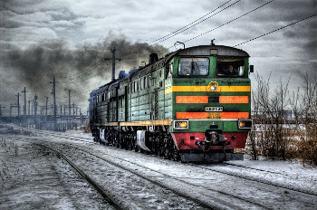

Réflexions sur Samare 2/5 - Les personnages principaux
Édité le 16 avril 2016
Après vous avoir expliqué où j’en suis sur mon « abordage » de l’histoire, je vais vous parler un peu des personnages principaux tels que je les conçois pour le moment. Il se peut bien sûr qu’au fil de ma réécriture, ils aient besoin de changer. Faire un point ici me permettra de cibler ce qui risque de poser problème, je pense.
Réflexion sur la dénomination
La première question qui me vient est la suivante : faut-il donner un nom de famille à mes personnages ?
Dans ma version initiale, ils en possèdent un. Cela permet d’ailleurs aux Samarins d’identifier rapidement Anne-Lys comme étant la fille des fondateurs de la cité, car elle s’appelle Anne-Lys Grahaam et l’institut des fondateurs est désigné comme étant « l’institut Grahaam ». Mais je me demande si c’est vraiment utile. Si c’est naturel même ?
Dans une cité comme la Capitale, où les origines sont importantes pour pouvoir mettre en valeur ses biens, oui, c’est primordial. Les gens peuvent craner en disant « je suis Jean Machin ou Truc, blablabla ». Mais ils pourraient tout aussi bien dire « je suis Jean, fils de Jeannot, descendant de Joseph » (par exemple, pour ne pas reprendre mot pour mot la référence qui me vient à l’esprit. Les amateurs de la Terre du Milieu comprendront ^^). À Samare, au contraire, personne ne possède rien. Ou plutôt, tout appartient à tout le monde. Chacun est libre de faire ce qu’il souhaite ou de participer aux activités des groupes qui l’intéressent. Par prolongement, personne n’appartient vraiment à une famille, la communauté formant elle-même une gigantesque famille. La plupart des Samarins viennent d’autres cités, détruites par la Capitale, et sont venus se réfugier à Samare. Ils devraient, pour observer les valeurs de la cité et de ses Fondateurs, abandonner leur nom de famille en même temps que leur ancienne vie. Non ? Je ne sais pas. Je me pose encore la question.
Je vais vous présenter mes personnages avec leur nom, comme dans ma version initiale, et quand j’aurai la réponse à mon interrogation, je vous le ferai savoir.
Les personnages
Rena Aaron
Il est le héros de l’histoire, dans tous les sens du terme. C’est le personnage principal, il permet la résolution du gros problème et il est le sujet du miracle qui apporte une touche de magie. C’est mon chouchou :)
Son histoire
Il est né à la Cité Nord et a « immigré » à Samare avec sa mère lorsque son père est mort (il avait un ou deux ans). Il intègre l’école élémentaire et y rencontre tous ses petits camarades. Il devient très ami avec Anne-Lys.
Le jour de la tempête à Samare, alors que les fondateurs meurent et qu’Anne-Lys est forcée de quitter la cité, Rena court à travers les bois pour aller lui dire au revoir. Il est frappé par la foudre (ou quelque chose qui y ressemble).
Il survit, mais commence à muter : des rameaux de frênes lui poussent dans le dos la nuit et disparaissent au matin. Il s’isole parce qu’il a peur de passer pour un monstre auprès des autres. À ce moment, il n’a que huit ans.
Il reste seul et déprimé jusqu’au jour où il revoit Anne-Lys, qu’il sort du train en feu (ils sont alors adultes). Il se méfie un peu d’elle parce qu’elle a passé dix ans à la Capitale et que, conformément à son éducation et à ce qu’il a vu du reste du monde, il déplore les actions des Capitains qui pillent le monde pour leurs profits personnels.
Rena essaye de rester à distance d’Anne-Lys, mais il a envie de renouer le contact avec elle. Parallèlement, Arletty et Romarin (deux chercheurs de l’institut) découvrent son secret et tentent de lui venir en aide. Rena va réaliser qu’il se change complètement en végétal (en frêne) à cause de l’énergie naturelle brute qui n’est pas convertie par le générateur en courant alternatif consommable par la cité. Il cherche une solution pour réparer le générateur en espérant inverser le cours de sa mutation. Il finit par se sacrifier pour le bien de la cité et meurt (ou fane).
Après ce moment, son esprit erre autour de ses compagnons qu’il suit et essaye d’aider sans comprendre pourquoi il n’a pas définitivement disparu. Il s’avère en fait que Arletty et Romarin ont gardé son corps en espérant le faire revenir à la vie. Ils pensent que c’est une plante et qu’avec un peu de soin, il « repartira », comme un arbre malade, mais ils sont entrés dans la sphère de l’inconnu. Tout cela dépasse leurs connaissances. Lorsque Rena « ressuscite », ils ne comprennent pas comment ni pourquoi c’est arrivé. C’est un miracle naturel.
Ses caractéristiques physiques
- yeux verts, lunettes (mais je vais peut-être bien les enlever)
- cheveux bruns, mi longs
- assez grand
- air fatigué et taciturne
- ailes végétales durant la nuit
Son caractère (à approfondir)
- solitaire
- bougon
- tendance à vouloir se sacrifier pour le bien des autres (comme lorsqu’il repousse Anne-Lys pour lui éviter d’endurer sa mutation alors qu’elle désire être avec lui, ou quand il insère la clé dans le générateur alors qu’il sait que ça va le tuer)
- motivé à découvrir les défaillances du générateur pour comprendre d’où vient sa mutation
- gêné d’obtenir de l’aide des chercheurs de l’institut
- assez perspicace (notamment pour comprendre les intentions des gens)
Anne-Lys Grahaam
Elle est la fille des fondateurs de Samare et la plus à même, selon les gens, de reprendre les rênes de l’institut et d’aider la cité à étendre son influence sur le monde. Enfin, ça, c’était avant. Puisque dans ma « nouvelle approche » d’un monde meilleur il n’y a pas vraiment de notion de famille ou de lien du sang, qu’il n’y a pas d’héritage qui tienne et que chacun peut prétendre à être le meilleur uniquement parce qu’il l’est vraiment (pas parce qu’il a été « pistonné » ou qu’il est l’enfant d’un tel ou un tel), alors Anne-Lys ne peut pas être attendue pour succéder aux fondateurs de Samare. Elle doit faire ses preuves, en quelques sortes.
Son histoire
Elle est née à Samare et a grandi avec les principes inculqués par ses parents, occupés à apprendre aux membres de leur communauté comment vivre en harmonie avec le reste de la Nature. Anne-Lys suit le cursus normal de tout enfant à Samare, à savoir l’apprentissage des mœurs de la cité et de l’histoire du monde à l’école élémentaire, jusqu’à ce que ses parents meurent durant l’une de leurs expériences. À huit ans, elle est alors forcée de partir vivre chez sa tante, à la Capitale.
Lorsqu’elle revient à l’âge adulte, elle a l’intention d’intégrer l’institut pour reprendre les principes de ses parents et comprendre comment fonctionne le générateur d’électricité qu’ils ont jusque-là gardé secret. Elle espère apprendre aux autres cités, notamment à la Capitale, comment se fournir de l’électricité sans piller les dernières ressources naturelles.
Durant le voyage vers Samare, son train déraille et elle manque de mourir. Elle est expulsée de la carcasse du train en feu par un animal étrange, aux contours électriques. Rena la sauve, mais reste caché pour qu’elle ne le voit pas.
Anne-Lys se remet de l’accident et arrive à l’institut, attendue par tous, mais détestée par le professeur Le Broc, successeur de ses parents. Elle aimerait se rapprocher de Rena, mais le déteste rapidement à cause de son comportement de rejet incessant. Elle travaille sur le générateur avec Arletty, qui garde le secret de Rena, mais les fait étudier ensemble. Martha, le guide spirituel d’Anne-Lys, la conduit à la découverte d’informations sur le générateur et à la compréhension de la défaillance qui a causé la mort de ses parents.
Anne-Lys finit par apprendre que Rena mute, elle veut l’empêcher de se sacrifier, mais échoue. Malheureuse, elle entreprend de partir à la recherche de la plante que ses parents pensaient indispensable à la réparation du générateur. Elle va jusque dans la montagne avec Romarin et sa tante, suivis de près par l’esprit errant de Rena. Leur but reste inchangé : convertir le mode de consommation des autres cités afin de laisser souffler les forêts, les mers et toutes les ressources naturelles qui arrivent à expiration.
Ses caractéristiques physique
- grands yeux noisette
- longs cheveux blonds
- menue
Son caractère
- râleuse
- un peu prétentieuse et égocentrique (elle a l’impression qu’on lui a gâché la vie quand on l’a envoyée à la Capitale, mais elle ne se rend pas compte que les autres ont, eux aussi, leur lot de souffrances à porter)
- déterminée
- fleur bleue
Pour conclure l’approche des deux premiers personnages, je dirai que certains éléments sont à revoir ou à approfondir. Les créatures électriques qui sortent Anne-Lys du train font très « apparitions magiques » par exemple, mais elles sont en réalité des « effets secondaires » de l’utilisation de l’énergie naturelle dans la cité. C’est parce que le système de récupération de l’énergie n’est pas au point qu’il a des répercussions sur la nature et atteint des animaux de la forêt, comme une maladie. Je dois réfléchir plus intensément à tout ça pour le présenter de manière moins mystique.
Dans un prochain article, je vous parlerai de Romarin, d’Arletty, de Thémmé Le Broc, de Conrad Brassac, des fondateurs, de Martha (ou Perce-Neige) et de la tante Johana.
D’ici là, bonne lecture !